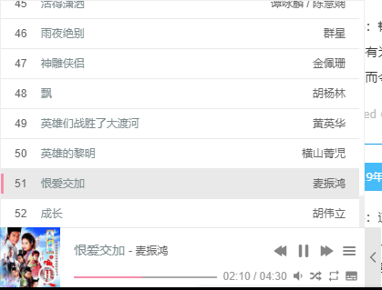

本来用的是网易云的外链，后来发现APlayer就换成这个播放器组件了
在 页脚 HTML 代码 中插入以下代码就行了
1 <link rel="stylesheet" href="https://cdn.jsdelivr.net/npm/aplayer@1.10.1/dist/APlayer.min.css">
2 <script src="https://cdn.jsdelivr.net/npm/aplayer@1.10.1/dist/APlayer.min.js"></script>
3 <div id="aplayer" class="aplayer" data-autoplay="true" data-id="3714831768" data-server="tencent" data-type="playlist" data-fixed="true" data-listfolded="true" data-order="random" data-theme="#F58EA8"></div>
4 <script src="https://unpkg.com/meting@1.2.0/dist/Meting.min.js"></script>这样子播放器是在页面的左下角，效果如图：
